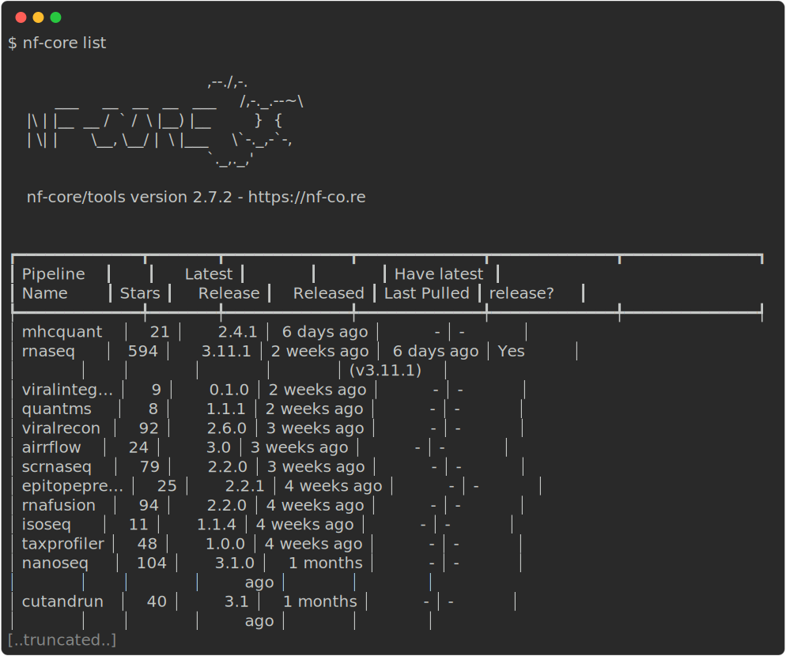

nf-core for users

nf-core tools has additional commands to help users execute workflows. Although you do not need to use these commands to execute the nf-core workflows, they can greatly assist and improve and simplify your experience.
There are also nf-core tools for developers. However, these will not be covered as a part of this workshop. If you are curious to learn more about these tools you can find more information on the tools page on the nf-core website.
nf-core list
The nf-core list command can used to print a list of remote nf-core workflows along with your local information.
nf-core list
The output shows the latest workflow version number and when it was released. You will also be shown if and when a workflow was pulled locally and whether you have the latest version.
Keywords can be supplied to help filter the workflows based on matches in titles, descriptions, or topics:
nf-core list dna
Options can also be used to sort the workflows by latest release (-s release, default), when you last pulled a workflow locally (-s pulled), alphabetically (-s name), or number by the number of GitHub stars (-s stars).
Try to filter the list of nf-core workflows for those that are for rna and sort them by stars.
Run the list command, filter it for rna, and sort by stars:
nf-core list rna -s starsnf-core launch
Nextflow workflows can have a considerable number of optional command line flags. To help manage these, you can use the nf-core launch command.
The command takes one argument - either the name of an nf-core workflow which will be pulled automatically or the path to a directory containing a Nextflow workflow:
nf-core launch nf-core/<workflow>When running this command, you will first be asked about which version of a workflow you would like to run. Next, you will be given the choice between a web-based graphical interface or an interactive command-line wizard tool to enter the workflow parameters for your run. Both interfaces show documentation alongside each parameter, will generate a run ID, and will validate your inputs.

The launch tool uses the nextflow_schema.json file from a workflow to give parameter descriptions, defaults, and grouping. If no file for the workflow is found, one will be automatically generated at runtime.
The launch tool will save your parameter variables as a JSON file called nf-params.json and will suggest an execution command that includes the -params-file flag and your new nf-params.json file.
The wizard will ask if you want to launch the Nextflow run. You will also be given the run command and a copy of the JSON file for you to copy and paste if you wish.
Any profiles or Nextflow options that are set using the wizard will also be included in your run command.
Try to run the nf-core/rnaseq workflow with the nf-core launch command. Use the latest version of the workflow with the the test and singularity profiles, and name your output directory results:
Use the nf-core launch command for the nf-core/rnaseq workflow and follow the prompts:
nf-core launch nf-core/rnaseqYour final run command should look like this:
nextflow run nf-core/rnaseq -r 3.11.1 -profile test,singularity -params-file nf-params.jsonYour nf-params.json file should look like this:
{
"outdir": "results"
}nf-core download
Sometimes you may need to run an nf-core workflow on a server or HPC system that has no internet connection. In this case, you will need to fetch the workflow files and manually transfer them to your system.
To make this process easier and ensure accurate retrieval of correctly versioned code and software containers, nf-core has the download helper tool.
The nf-core download command will download both the workflow code and the institutional nf-core/configs files. It can also optionally download singularity image file.
nf-core downloadIf run without any arguments, the download tool will interactively prompt you for the required information. Each prompt option has a flag and if all flags are supplied then it will run without a request for any additional user input:
- Pipeline name
- Name of workflow you would like to download
- Pipeline revision
- Select the revision you would like to download
- Pull containers
- Choose if you would like to download Singularity images
- This will only work if you have Singularity installed
- Choose compression type
- Choose compression type for Singularity images
- Point 1
- Point 2
- Point 3
All materials copyright Sydney Informatics Hub, University of Sydney